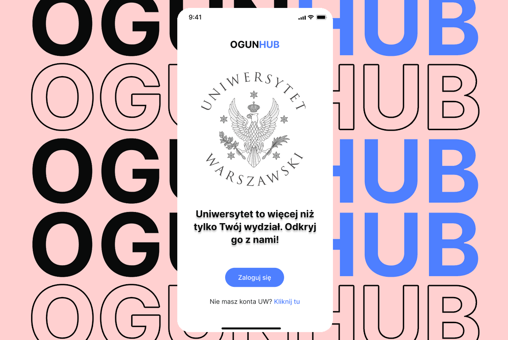
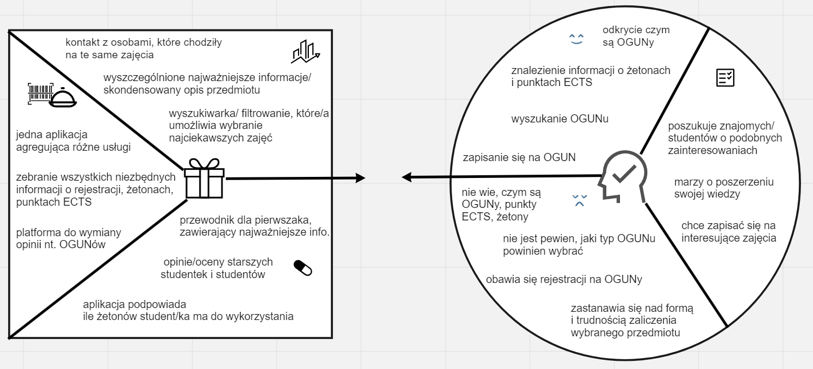
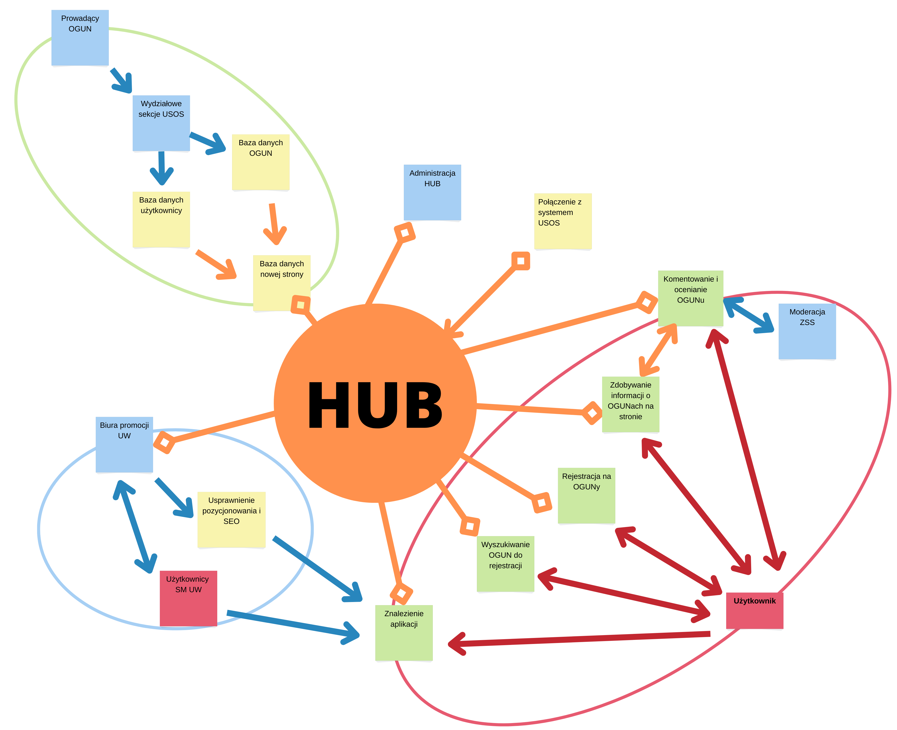
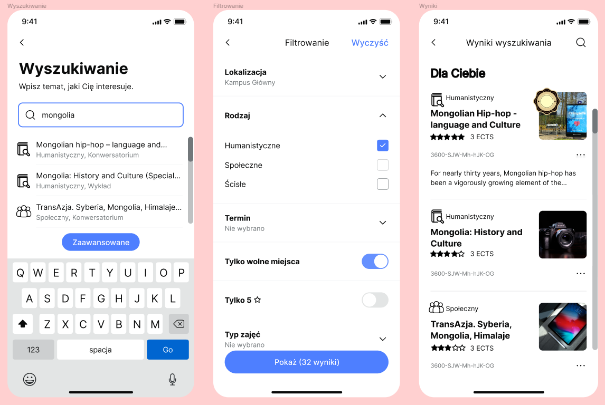
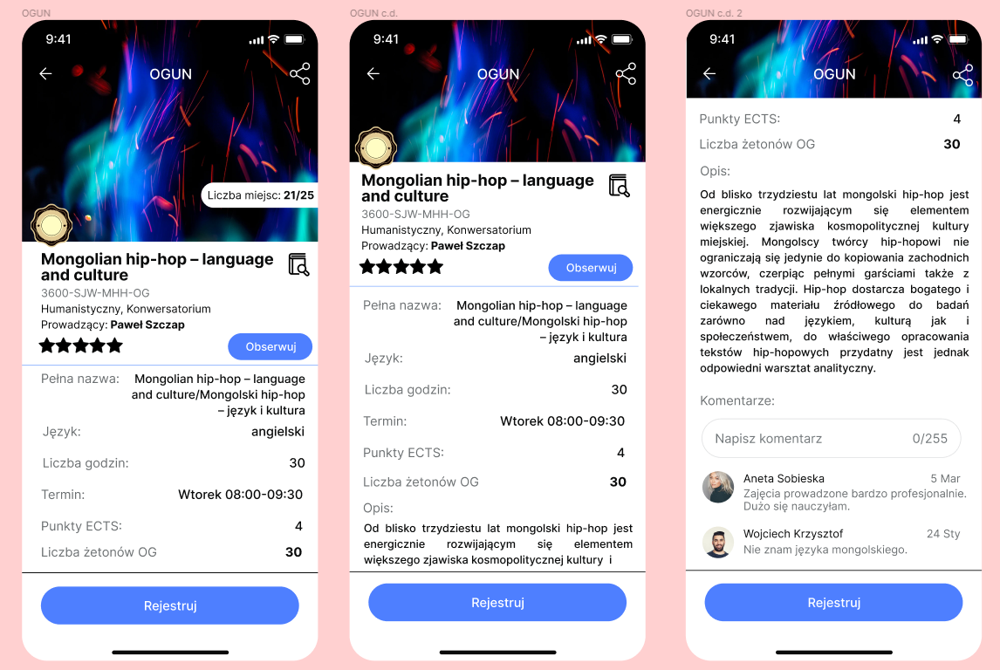

designing
OGUN
HUB
An academic project that is centered around a new concept for organizing university-wide extra-curricular activities at University of Warsaw
1. Overview
OGUNHUB is a college project focused on addressing the challenges related to accessing information about university courses (OGUNs) at the University of Warsaw. The project aims to create a user-friendly information service that provides students with comprehensive information about OGUNs and assists them in choosing suitable courses. Methodologically it’s based on design thinking procedures: research, ideation and prototyping, but without an implementation phase, as it’s just an university project. I will show you some of the interesting design decisions and some work in figma I’ve done.
2. My role and responsibilities
I was part of a team of four and our responsibilities were basically equal. When necessary, I tried to take the lead in the team to resolve any impasses.
3. My partners and stakeholders
I collaborated closely with three of my college colleagues. Our hypothetical partners and stakeholders are the University of Warsaw (UW), the Office of Promotion at UW, the Student Government Board (Zarząd Samorządu Studentów UW), and the potential users, which are the students of UW.
4. Problem statement
The University of Warsaw's current methods of providing information about OGUN courses are inadequate. The existing website and registration system lack user-friendliness, structure, comprehensiveness as well as ways to effectively communicate with users. Worth mentioning is also an outdated look of the current system. Students struggle to find relevant information, leading to the creation of ad hoc Facebook groups for guidance. The problem is centered around the lack of a centralized, user-friendly source of information about OGUNs.
5. Users and audience
The primary audience for the OGUNHUB service is students at the University of Warsaw, particularly those seeking information about OGUN courses, including newcomers, those choosing courses, and those already attending courses. We assumed that the target group should be new students, who don’t have experience with the current system. From our own experience as well as our younger colleagues, the current system is especially unfriendly to newcomers, who often don’t even know it exists. But essentialy the project aims to cater to the needs of students from various backgrounds and preferences.
Value Proposition Canvas
6. Scope and constraints
The scope of the project includes designing a mobile application (OGUNHUB) that provides comprehensive information about OGUN courses, aids in course selection, and facilitates communication among students. The application will utilize existing authentication data from the Central Authentication Server. Constraints include ensuring user-friendliness, ease of use, and adherence to the university's authentication system.
7. Chosen design process
Whole designing process is based on the Design Thinking process. First step was to conduct an extensive research providing us with answers for “What are the information needs of University of Warsaw students seeking additional cultural subjects (OGUN)?” and “How do the available UW sources meet these needs?” Our answer to these questions based on the gathered data involves creating a mobile application that serves as a central hub for OGUN-related information. The application will include sections such as a welcome page, course information, course search, and user profiles. The prototype incorporates features such as registration, course details, community engagement, and quality ratings. This way it would be easier to promote the app among the students and to ease the difficulty curve for interacting with the system.
Service Image model
8. Outcome and results
The desired outcomes include increased accessibility and comprehensiveness of OGUN course information, improved user experience for students, simplified course selection, and enhanced communication among students. The success of the project will be measured through various metrics, including application downloads, user engagement, and user satisfaction surveys.
9. Reflections
Fueled by design thinking, the OGUNHUB project is my collaborative effort to tackle the University of Warsaw's OGUN course information problem. Together with a team, we devised a mobile app that's user-friendly and bridges the information gap for students. By engaging stakeholders and basing decisions on research, we can presumably create a solution that aligns with the university's and students’ needs.
Mockups presenting searching function and content
I was responsible for delivering this part of app mockup. Our main inspiration was the Glovo app and similar food delivery apps. Filters were based on data gathered during research for the information needs of University of Warsaw students. Obviously features aren't a final product and our app idea was never developed.
Searching tool
Content of an OGUN
